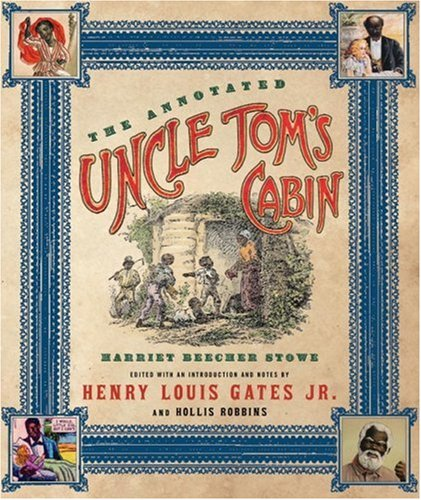
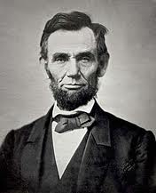
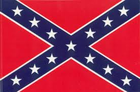

| Key |
| Political Events |
Blue |
| Social Events |
Purple |
| Military Events |
Red |
| Economical Events |
Green |
- 1850
- -The Compromise of 1850 admitted California into the Union as a free state. Arizona and New Mexico were open to popular sovereignty. This was an advantage for the north.
The Fugitive Slave Act was passed. This was supposed to help the south. Any run away slaves found in a free soil state were to be sent back to their master. The north did not enforce this law, which angered southerners. The north got the better deal from the compromise, and sectionalism increased. This event is the major catalyst of the events leading to the American Civil War.
- -Some slaves escaped bondage by using the Underground Railroad. There would be "conductors" leading the escapers to the north or Canada while resting at safe houses. Conductors also talked in code, calling the escapess "cargo". One famous conductor was Harriet Tubman, a former slave. She rescued more than 300 slaves. The Fugitive Slave law was supposed to put an end to the Underground Railroad, but it was poorly enforced by the north.
- 1852
- -Franklin Pierce was elected by the democrats. This presidential election led to the demise of the Whig party, because northern and southern Whigs were split by the Fugitive Slave Law.
- -President Pierce sent three diplomats to Ostend, Belgium so that they could purchase Cuba from Spain for southerners. The diplomats made the Ostend Manifesto, which was written in secret, but the Ostend Manifesto was discovered, angering people who were against slavery.
- -Uncle Tom's Cabin was published by Harriet Beecher Stowe. This book made slavery seem horrible, and many northerners who read it wanted slavery to be abolished. This book was banned in the south, but it sold in Europe, and many Europeans had the same opinions as the northerners.
This prevented foreign intervention during the Civil War. When Lincoln announced the Emancipation, the war was about abolishing slavery, which Europeans supported. This book was banned in the south. Southerners argued that slaves were better taken care of on plantations then the free blacks working in the factories in the north for a minimum wage.

- 1853
- -Jefferson Davis sent James Gadsen to Mexico to purchase small section of land (in New Mexico and Arizona) for 10 million. The land was purchased, and it was called the Gadsen Purchase. The purpose of the land was to have railroad tracks built on it. Unlike the north, the southern land was less hilly and organized.
- 1854
- -Stephen A. Douglas wanted a railroad to run through the Nebraska territory, so he devised a scheme. The Kansas-Nebraska Act divided the Nebraska territory (which is inside the Louisiana purchase territory) into 2 states: Kansas and Nebraska. Nebraska was a free state, while Kansas was open to popular sovereignty. Kansas was above the 36º30' line. If Kansas became a slave state, the Missouri Compromise would be repealed. Many northerners and southerners rushed to occupy this territory, and this led to conflict between them. This also led to the birth of the Republican Party, composed of ex-Free-Soilers, Whigs, and Democrats.
The Republicans did not want slavery to spread, so they were against the Kansas-Nebraska Act. Later on abolitionists joined the party, and they wanted slavery to end.
- 1855
- -Because of the Kansas-Nebraska Act, Kansas was open to popular sovereignty. As a result the New England Emigrant Aid Company paid people who were against slavery to settle there. The pro-slavery southerners did the same, which started the conflict whether Kansas should be a free state or not. As a result, tensions between the north and south increased.
- 1856
- -James Buchanan was elected to be president by the Democrats. He was a weak president and spend precious months idling, while most of the southern states seceded. Buchanan's incompetency allowed the CSA to grow before Lincoln had a chance to intervene.
- -Senator Charles Sumner of Massachusetts blamed the Democrats for the conflict in Kansas. He also spoke negatively about Andrew Butler, the senator of South Carolina. This enraged Preston Brooks, who responded by beating up Sumner with his cane. The North was enraged, but the South applauded Brook's action, which angered the North even more. The Caning of Sumner was another event which increased tension between the North and the South.
- -In Kansas, the northerners and southerners had contrasting views about slavery. As a consequence, pro-slavery southerners attacked the anti-slavery town of Lawrence. In return John Brown, an abolitionist, attacked Pottawatomie Creek. These battles in Kansas increased tensions between the north and the south.
- 1857
- -In the Dred Scott decision, Court Justice Taney declared that Congress had no right to control private property, which included slaves. Therefore, the Missouri Compromise was declared unconstitutional. It created outrage in the North, because it meant that slavery was legal everywhere, because slaves could not sue for their freedom.
- 1858
- -The Lecompton Constitution was rejected by Congress. It would have made Kansas a slave state, but it was not supported by a majority of the settlers.
- -Stephen Douglas brought up the Freeport Doctrine during the Lincoln-Douglas debates, which said that territorial legislatures could still exclude slavery. As a result, Douglas won the seat in the Senate but lost Democrat supporters. The loss of his supporters made him lose the election of 1860.
- 1859
- -On October, John Brown raided the federal arsenal at Harpers Ferry. His plan was to start a slave uprising in Virginia, but he was captured by federal troops. These troops were led by Robert E. Lee, who would soon be a general for the Confederate Army.
John Brown was tried for treason and hanged, but southerners believed Brown's actions reflected the motives of every northerner, which increased tensions between the North and the South.
- 1860
- -Abraham Lincoln, voted for by Republicans, won the presidential election without a single vote from the South, which caused most of the southern states to secede from the Union, starting with South Carolina, because they felt they no longer had representation in the Federal Government. During the Civil War, Lincoln had more political power than Congress, and he broke a few rules. One example is that he increased the power of the federal army without permission from Congress.
His plan after the war was to admit the southern states back to the Union as soon as possible, but his assassination ruined his plans for Reconstruction.

- -Senator John Crittenden of Kentucky proposed the Crittenden Compromise. It would allow slavery in all territories south of 36 30'. This was rejected by Lincoln because it would violate the Republican platform against slavery.
- -The Confederate States of America was created with Jefferson Davis as its president. At the end of 1860, only South Carolina had seceded, but soon other states would join the rebellion.
